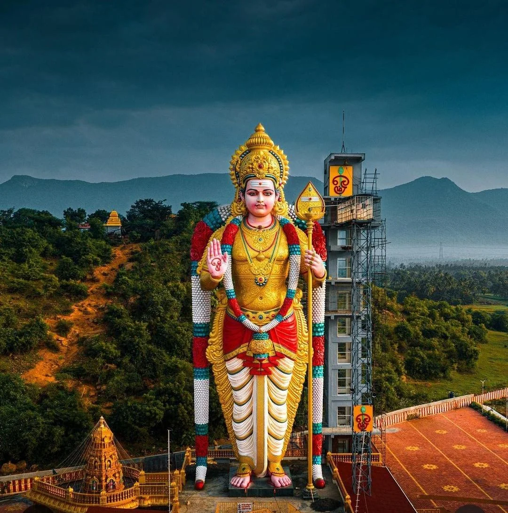
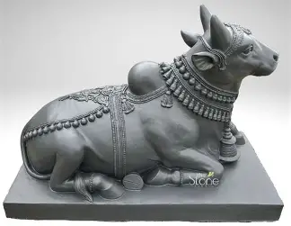

-
Kannagi statue
The Kannagi statue symbolizes justice, courage, and the power of truth. Depicting the legendary heroine of the Tamil epic Silappatikaram, it shows her holding a silambu (anklet), representing her fight against injustice after her husband’s wrongful execution. The statue stands as a cultural icon of righteousness and feminine strength.

-

temple chariot new
A temple chariot, also called ther or ratha, is a beautifully decorated wooden car used to carry the temple deity during festivals. Pulled by devotees with ropes, it symbolizes divine presence moving among the people. New temple chariots are crafted with intricate carvings, vibrant colors, and traditional architectural designs.

-
thiruvalluvar
The Thiruvalluvar statue, standing tall at Kanyakumari, honors the great Tamil poet and philosopher, author of Thirukkural. Rising 133 feet, symbolizing the 133 chapters of the text, it reflects wisdom, virtue, and universal values. The monument portrays Thiruvalluvar as a timeless guide, inspiring humanity with moral and ethical principles.
-

murugan
The Murugan statue represents the Tamil god of war and wisdom, also known as Kartikeya or Subramanya. Often depicted with a spear (Vel) and peacock, he symbolizes courage, victory, and divine knowledge. Famous Murugan statues, like at Batu Caves in Malaysia, stand tall as icons of devotion and strength.
-

Nandhi
The Nandhi statue, symbolizing Lord Shiva’s sacred bull, represents strength, faith, and devotion. Always facing the sanctum in Shiva temples, Nandhi embodies loyalty and serves as the divine vehicle (vahana) of Shiva. Carved in majestic stone, the statue signifies patience, power, and the unwavering bond between the devotee and the divine.
-

kurinji flower
Kurinji flower, also called Neelakurinji, blooms once every 12 years on the hills of South India, especially in the Western Ghats. Its vibrant bluish-purple blossoms carpet the mountains, creating a breathtaking view. Revered in Tamil culture, Kurinji symbolizes love, rarity, and the beauty of nature’s unique cycle.